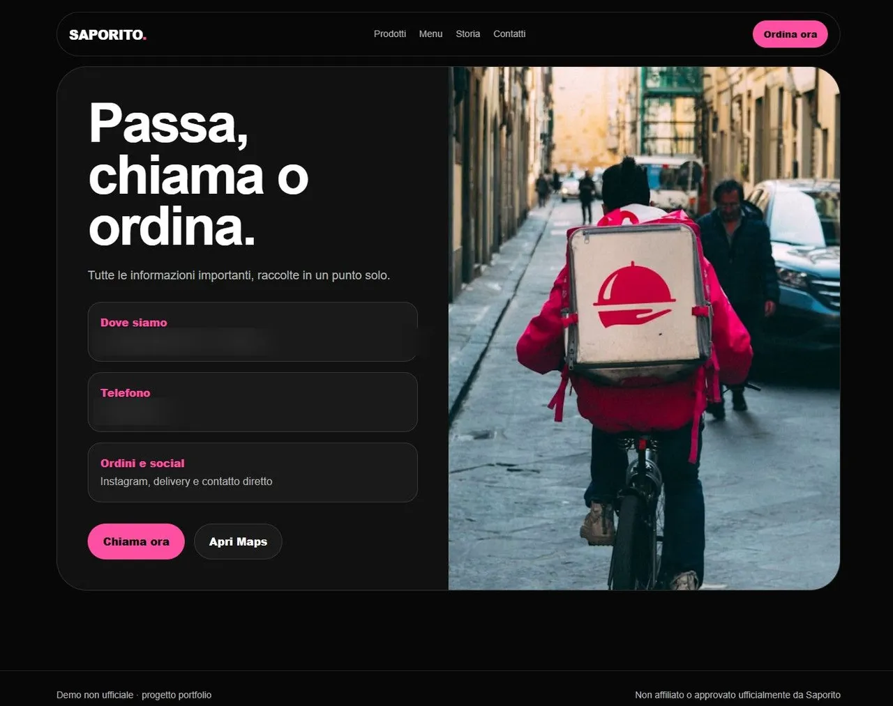
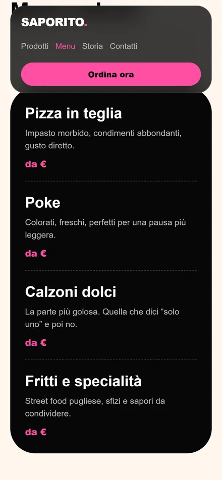
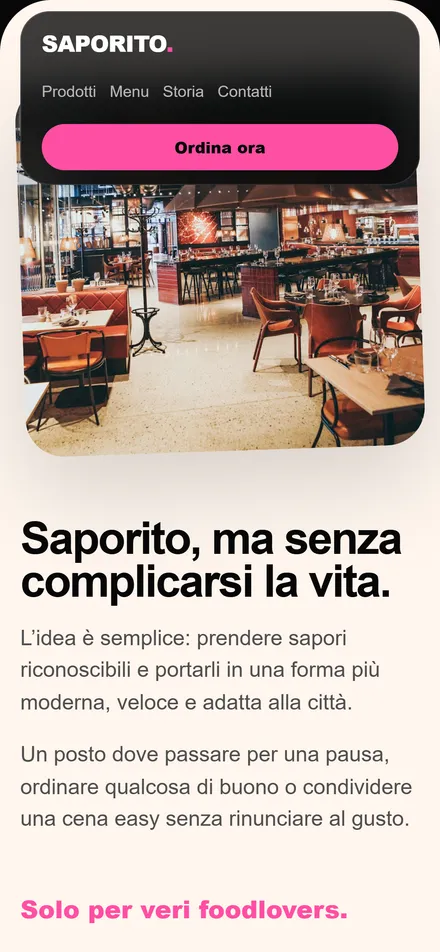

Foto grandi
Nel food le immagini fanno metà del lavoro. Devono essere subito protagoniste, non miniature perse in una griglia.
Pizza in teglia e street food pugliese, un brand con carattere e una comunicazione che vive quasi solo sui social. Il concept immagina cosa succede quando quel carattere trova finalmente una casa sua.

Il problema
Saporito ha colori forti, un nome che si ricorda e prodotti molto fotogenici. Non serviva inventare un'identità: serviva metterla in ordine.
Il punto debole era altrove. Tutto passa da Instagram, e Instagram è bravissimo a far venire fame ma pessimo a rispondere alle domande pratiche: che cosa c'è nel menu, dove siete esattamente, come ordino adesso. Chi arriva da una ricerca o da un consiglio si ferma prima.
La direzione
La prima schermata doveva fare tre cose insieme: far venire fame, far capire che tipo di locale è, e offrire una strada semplice verso il menu o i contatti. Nero e rosa restano i protagonisti, ma dentro una griglia più leggibile.
Nel food le immagini fanno metà del lavoro. Devono essere subito protagoniste, non miniature perse in una griglia.
Niente racconto lungo. Chi ha fame deve capire tutto in pochi secondi, spesso mentre cammina.
Menu, telefono, Maps e Instagram sempre a un tocco, ripetuti dove servono invece che nascosti nel piè di pagina.
Gli stessi colori del locale e dei social, così il sito sembra davvero la stessa attività e non un parente lontano.
Dentro il progetto
Home, prodotti, menu, storia e contatti. Nient'altro: ogni pagina in più è una pagina che qualcuno dovrà aggiornare.


Mobile
Chi scopre Saporito quasi sempre lo fa da smartphone, spesso passando da Instagram. Per questo la versione mobile non è una riduzione di quella desktop: schermate verticali, bottoni larghi e sezioni che si scorrono con il pollice.




Design system
Nero per il carattere, rosa come segno riconoscibile, crema per far respirare le sezioni dove si legge davvero.
Nero
#080808
Rosa
#FF4FA3
Crema
#FFF6EE
Grafite
#121212
Questo è un concept dimostrativo realizzato da Prisma Locale a scopo di portfolio. Non è commissionato, affiliato né approvato da Saporito. Le immagini utilizzate sono placeholder o contenuti impiegati con autorizzazione.
E la tua attività?
Raccontaci com'è fatta e cosa vorresti succedesse quando qualcuno ti cerca. Ti rispondiamo con un'idea concreta e un preventivo chiaro.